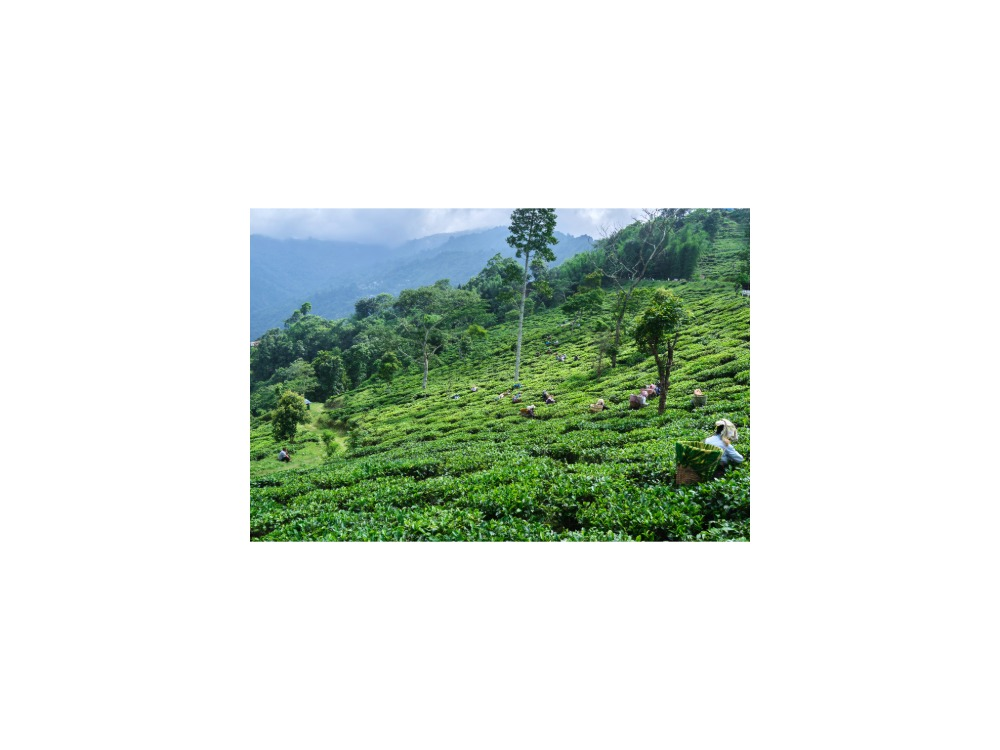
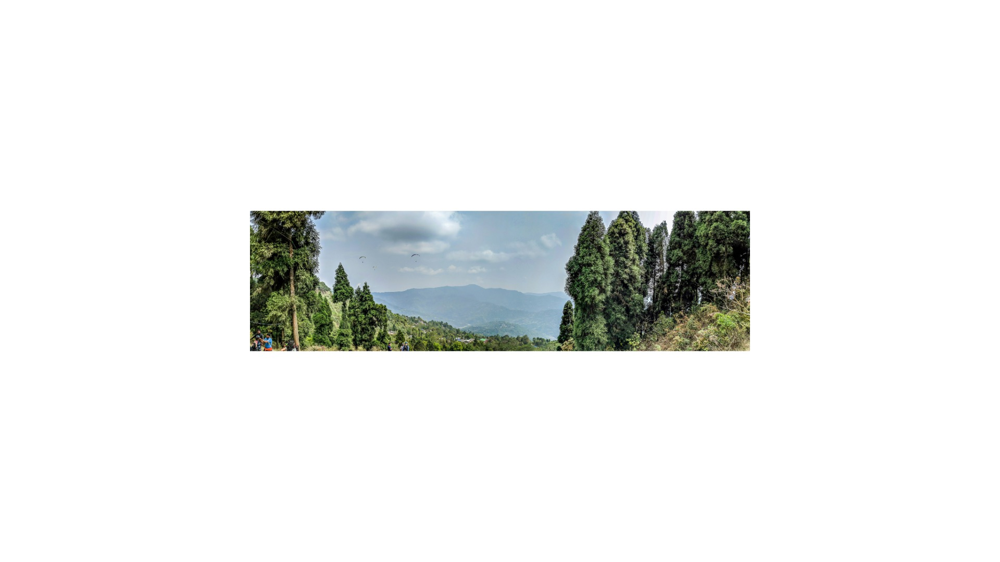
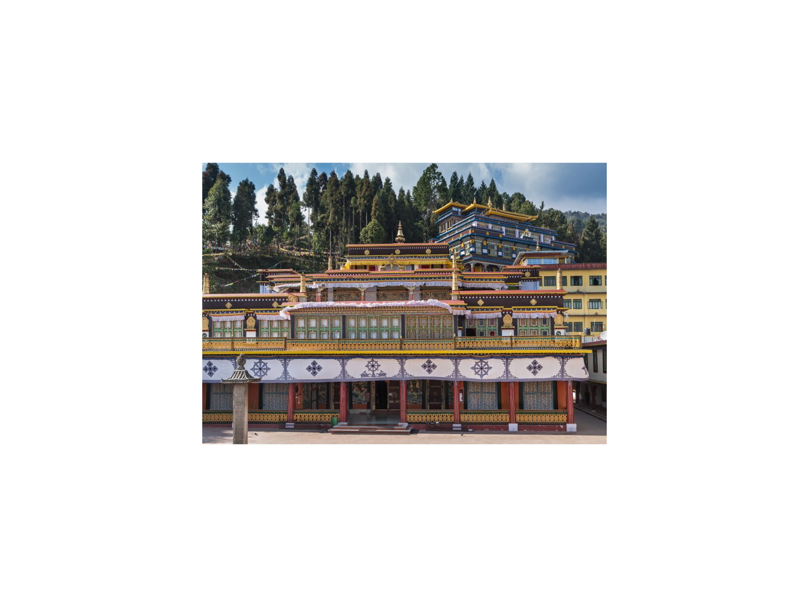
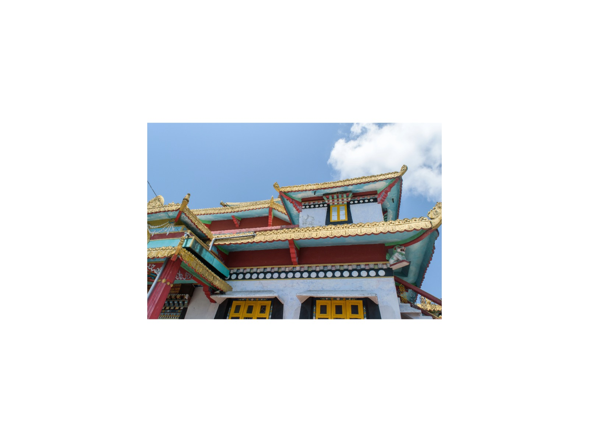

5-Day Eastern Himalaya: Darjeeling, Kalimpong & Gangtok
Delhi · Bagdogra · Darjeeling · Kalimpong · Gangtok
The journey
Tea estates, monasteries and Kanchenjunga at sunrise across Darjeeling, Kalimpong and Gangtok.
Combines Eastern Himalayan tea estates and Kanchenjunga viewpoints with Buddhist monasteries (Ghoom, Zang Dhok Palri Phodang, Rumtek, Enchey) and Tibetan culture across Darjeeling, Kalimpong and Gangtok. Comfortable rhythm with time at each site.
Highlights
- Tiger Hill sunrise over Mount Kanchenjunga.
- Ghoom Monastery, Batasia Loop, Tea Gardens, and HMI.
- Deolo Hill in Kalimpong and Rumtek Monastery in Gangtok.
- Optional extension (adds one night) to high-altitude Tsomgo Lake & Baba Mandir.
Route and day by day
Schematic route, not to scale.
Day 1Arrival in the Foothills & Drive to Darjeeling
Flight from Delhi to Bagdogra (flight not included). Scenic drive up mountain roads to Darjeeling (approx. 3–3.5 hours). Check in and evening at leisure. Overnight in Darjeeling.
Day 2Kanchenjunga Sunrise & Darjeeling Heritage
Pre-dawn drive to Tiger Hill for sunrise over Mount Kanchenjunga. Visit Batasia Loop and Ghoom Monastery.
Post-breakfast tour of Tea Gardens, Himalayan Mountaineering Institute, Himalayan Zoological Park, and Japanese Peace Pagoda. Overnight in Darjeeling.
Day 3Scenic Drive to Gangtok via Kalimpong
Drive to Gangtok via Kalimpong (approx. 6–7 hours including stops). Tour Deolo Hill, Durpin Dara View Point, Zang Dhok Palri Phodang Monastery, and Pine View Nursery. Overnight in Gangtok.
Day 4Gangtok Monasteries & Tibetan Culture
Tour Rumtek Monastery, Namgyal Institute of Tibetology, Enchey Monastery, and Tashi View Point. Stroll pedestrian MG Marg in the evening. Overnight in Gangtok.
Day 5Descent to Bagdogra & Departure
Drive down to Bagdogra (approx. 4.5–5 hours) for a flight to Delhi; book an afternoon or evening departure.
Option · Day 5High-Altitude Tsomgo Lake & Baba Mandir
Requires a permit arranged in advance (foreign nationals: confirm current Sikkim permit rules) and pre-booking.
Day 5 is spent on an excursion from Gangtok to Tsomgo Lake (12,400 ft) and Baba Mandir (13,123 ft); the transfer to Bagdogra and the flight to Delhi move to Day 6.
Best time to visit
Best Fair Avoid
Best time: Mar–May, Oct–Nov. Also good: Dec–Feb, Sep.
March to May and October to November give the clearest views of Kanchenjunga. June to September brings heavy monsoon rain and road delays.
What is included
Included
- Private air-conditioned vehicle with driver
- Licensed guide (English or Russian)
- Monument entry fees
- Hotels (4 nights)
Not included
- Flights
- Meals unless stated
- Tips and personal expenses
- Travel insurance
Indicative; your personal quotation confirms exactly what is included.
Good to know
- Monsoon landslides can delay the Darjeeling–Kalimpong–Gangtok roads; Tiger Hill views are weather-dependent.
Places on this journey
Tiger Hill Ghoom Monastery
Ghoom Monastery Batasia Loop
Batasia Loop
Tea Garden
Deolo Hill
Rumtek Monastery Tsomgo Lake
Tsomgo Lake
Zang Dhok Palri Enchey Monastery
Enchey Monastery Mg Marg
Mg MargQuestions
Is this journey private?
Yes. Every journey is for you and your travelling companions only, with your own guide, car and driver. There are no groups or shared tours.
Can I change the itinerary?
Yes. This itinerary is a starting point. Tell me your interests, pace and dates and I will adjust it before I quote.
Which languages are available?
Vikramjeet guides in English and Russian.
How demanding is this journey?
Comfortable rhythm with time at each site. The pace rating is moderate pace.
How do I book, and when will I know the price?
Send a request with your dates. You receive a personal itinerary and quotation within 24 hours.
Themes
Himalayan Escapes Spiritual & Multi-Faith
Destinations
Similar journeys
 1 Day
1 Day1-Day Imperial Delhi & Spiritual Heritage: Private Full-Day Tour
Old Delhi's lanes, Mughal tombs and sacred sites of three faiths, paced around you in one private day.
View journey → 8 Days
8 Days8-Day Himalayan Heritage Rail: Toy Train, Kullu Valley & McLeod Ganj
The UNESCO Toy Train, colonial Shimla, the Kullu Valley and the Tibetan hills of McLeod Ganj in eight days.
View journey → 9 Days
9 Days9-Day Himalayan Panorama & Golden Temple Traverse
Himalayan hill towns and monasteries, ending at the Golden Temple in Amritsar, over nine days.
View journey →